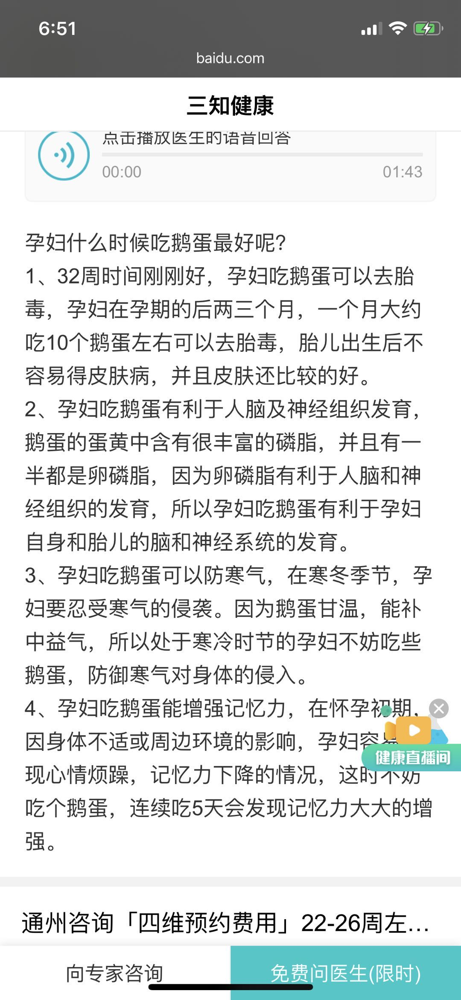

孕期饮食
推荐菜单
建议每天都要吃鸡蛋牛奶
1、早餐
- 豆制品：豆腐脑(一般买)
- 蛋类：水蒸蛋 、
- 三明治（面包夹鸡蛋，早餐机很好搞定）
- 奶类：破壁机打水果牛奶：香蕉牛奶、芒果牛奶、橙子牛奶
- 粗粮类: 小米粥、玉米糊糊
2、午餐&晚餐 菜单
- 肉类：小炒肉（猪五花肉） 、蒜苔炒肉（猪瘦肉） 、芹菜炒肉（瘦肉片） 、糖醋排骨 、土豆炖排骨 、 红烧排骨 、 黄焖鸡（鸡肉）
- 鱼类：糖醋带鱼（较简单）
- 蛋类：香菇鸡蛋 、蒜黄鸡蛋 、 鱼香鸡蛋 、韭菜鸡蛋 、西葫芦炒鸡蛋 、青椒火腿鸡蛋
- 豆制品：青椒豆腐 、麻婆豆腐 、焖煎豆腐 、芹菜炒香干 、
- 青菜：白灼生菜 、蚝油生菜 、豆豉鲮鱼油麦菜 、清炒油麦菜 、清炒菠菜、清炒油菜
- 凉菜：凉拌黄瓜、凉拌稻香村蒜肠、凉拌平遥牛肉
- 其他：酸辣土豆丝 、醋溜娃娃菜 、手撕包菜 、 蒜蓉茄子
3、主食类
- 大米+小米+黑米或玉米糊糊
- 包子、馒头、豆沙包、全麦饼
- 面条、饺子
孕中期饮食
参考：孕中期饮食建议 孕中期：近期饮食注意清淡不油腻，适当限制蛋糕类甜食甜点以及油炸膨化类食物，以免影响孕期血糖血脂等指标，加快孕期体重快速增长；
- 每日水果：200-400克左右，如苹果、橙子、橘子、柚子、桃子、奇异果、梨、葡萄等，尽量避免过多食用糖分过高水果，如菠萝蜜哈密瓜芭蕉榴莲等。
- 蔬菜：每日最好餐餐有一个水煮白灼蔬菜。
- 主食：适当增加粗粮，吃杂粮饭、二米饭、杂粮粥、全麦面食，有助血糖的平稳、促进肠胃蠕动、补充B族维生素和体重控制。
- 2袋奶：每日可以有2袋奶
- 吃含钙丰富的食物：如豆腐等豆制品油麦菜小油菜小白菜芝麻酱等
- 含铁丰富的食物：如畜肉瘦肉、肝脏类、血制品等食物日常也要注意有所摄入；
- 坚果：一天可以有10克左右坚果，富含多种多不饱和脂肪酸，有助于促进宝宝大脑发育
- 水：每天也少量多次喝水，补充水分，餐后稍作休息适当散步活动身体。
1、叶酸 叶酸是一种水溶性维生素。 从备孕开始吃到生宝宝。
2、钙片 注意： 等检查说缺钙 或者孕后期出现睡觉腿抽筋，再开始吃钙片。 钙补对了孩子骨头太硬不好生。
3、牛奶鸡蛋 牛奶鸡蛋要一直吃。
4、燕窝 如果孕妇想在孕期达到滋补养颜的功效，建议孕期全程吃燕窝。 燕窝富含氨基酸，以及多种矿物质和胶原蛋白，性温味甘，女性食用尤其好，一般情况下，孕妇可在孕期全程食用。 孕早期食用燕窝，对于孕妇呕吐、食欲下降、心情烦躁、头晕、心跳加速等症状都有一定的缓解作用，孕中后期食用燕窝，对孕妇的便秘、皮肤干燥、小便频繁等问题有缓解作用。
购买：同仁堂
5、32周吃鹅蛋 
产前饮食建议
产前这段时间饮食上注意：
（1）每天少食多餐，辛辣刺激以及油炸膨化类高热量难消化食物尽量少用；少量多次喝水，补充水分。
（2）孕晚期适当吃利于优生的食物
- 如核桃、葵花籽、黑芝麻、花生等富含不饱和脂肪酸的食物（每天10克左右即可，过多容易脂肪摄入超标）
- 推荐：瓜子、花生，大部分人都爱吃。
- 含铁、钙、锌等矿物质丰富的食物（肉类、鱼类等水产品、蛋类、奶类、豆制品等蛋白质食物）
- 含各类维生素如VB1、叶酸丰富的食物（新鲜蔬菜）等，每餐荤素搭配，均衡饮食。
（3）分娩前正确饮食方法为少量多餐，吃些易消化、高热量、低脂肪的食物，如稀饭、面条、牛奶、蒸鸡蛋羹等。
（4）临产前宜进食含糖类、蛋白质和维生素的高营养食物，如蛋糕、肉粥、藕粉、点心、果汁、牛奶、橘子、香蕉、巧克力等，而且要找准时机，最好在宫缩间歇期进食。
推荐菜谱：失眠调养方——百合炒芦笋、黄花菜莲子猪心汤、肉末茄子、大枣黑豆炖鲤鱼。